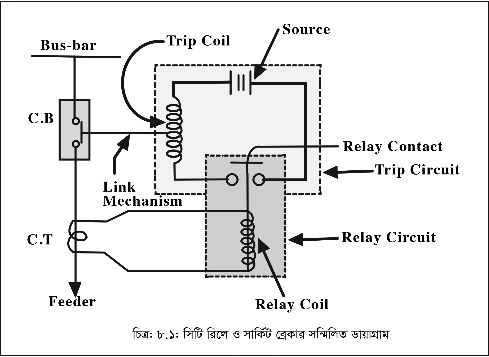

136
সার্কিট ব্রেকারের গঠন ও কার্যপ্রণালী
Understand the Concept of Construction and
Operation of Circuit Breaker
৮.০
ভূমিকা
(Introduction)
সার্কিট ব্রেকার একটি নিয়ন্ত্রণ ও রক্ষণ যন্ত্রবিশেষ যা এটির সাথে সংযুক্ত সার্কিটে কোন ত্রুটি (যেমন শর্ট সার্কিট আর্থ ফল্ট ইত্যাদি) দেখা দিলে স্বয়ংক্রিয়ভাবে ঐ সার্কিটকে সরবরাহ হতে বিচ্ছিন্ন করে দেয়, কিন্তু স্বয়ংক্রিয়ভাবে সার্কিটকে সংযোগ করে না। সার্কিট ব্রেকার এর সাথে সংযুক্ত অন্যান্য উপাদানের (সিটি, রিলে ইত্যাদি) সহযোগিতায় কার্যসম্পাদন করে থাকে।
৮.১
সার্কিট ব্রেকারের সংজ্ঞা click here to see the video
(Definition of a Circuit Breakers)
সার্কিট ব্রেকার একটি নিয়ন্ত্রণ ও রক্ষণযন্ত্র বিশেষ যা সার্কিটের অস্বাভাবিক অবস্থায় (শর্ট সার্কিট, আর্থিং ইত্যাদি) ত্রুটিপূর্ণ অংশকে সরবরাহ হতে বিচ্ছিন্ন করে কিন্তু এটি সার্কিটকে অটোমেটিকভাবে সংযোগ করতে পারে না। সংযোগ করার জন্য বিভিন্ন উপায় অবলম্বন করা হয়ে থাকে। স্বাভাবিক অবস্থায় এর দ্বারা সুইচিং ডিভাইসের মতো সার্কিটকে সংযোগ অথবা বিচ্ছিন্ন করা যায়, অর্থাৎ স্বাভাবিক অবস্থায় এটি সাধারণ সুইচের মত কাজ করে।
৮.২
সার্কিট ব্রেকার পরিচালনার মূলনীতি এবং এর কার্যপ্রণালি
(Describe the Principle of Operation of Circuit Breaker and Its Function)
বৈদ্যুতিক ব্যবস্থায় একটি সার্কিট ব্রেকার যে সকল কার্যাবলি সম্পাদন করে থাকে তা হলো :
(১) স্বাভাবিক অবস্থায় কোনো একটি সার্কিটকে সংযোগ ও বিচ্ছিন্ন করার জন্য (ম্যানুয়ালি অথবা রিমোট কন্ট্রোলের মাধ্যম) সুইচের মতো কাজ করে।
(২) অস্বাভাবিক অবস্থায় স্বয়ংক্রিয়ভাবে ত্রুটিপূর্ণ অংশকে বিচ্ছিন্ন করে দেয়।
(৩) ত্রুটিমুক্ত হওয়ার পর ম্যানুয়ালি বা রিমোট কন্ট্রোলের মাধ্যমে সার্কিটকে পুনঃসংযোগ করে।
সার্কিট ব্রেকারের মূলনীতি :
একটি সার্কিট ব্রেকার fixed এবং moving কন্টাক্ট থাকে যাদেরকে Electronodes
বলে। পাওয়ার সিস্টেমে স্বাভাবিক অবস্থায়ে এই কন্টাক্টদ্বয় close অবস্থায় থাকে এবং ফল্টযুক্ত অবস্থায় Open থাকে। আবার প্রয়োজনে এই Contact রিমোট Control বা manually অপারেট করা যায়।
যখন কোন ফল্ট সংঘটিত হয়, তখন সার্কিট ব্রেকারের Contact অটোমেটিকভাবে খোলার সাথে সাথে আর্ক (Arc) উৎপন্ন হয়। এই Arc কে remove করতে সার্কিট ব্রেকার কর্তৃক ফল্ট remove করতে কিছু সময় লেগে যায়। অতএব সার্কিট ব্রেকারের প্রধান সমস্যা হলো দ্রুত সময়ে Arc extilguish করা।
কার্যপ্রণালি : নিম্নের চিত্রের সাহায্যে একটি সার্কিট ব্রেকারের কার্যপ্রণালি দেখানো হলো।

চিত্র- ৮.১: সিটি রিলে ও সার্কিট ব্রেকার সম্মিলিত ডায়াগ্রাম click here to see the video